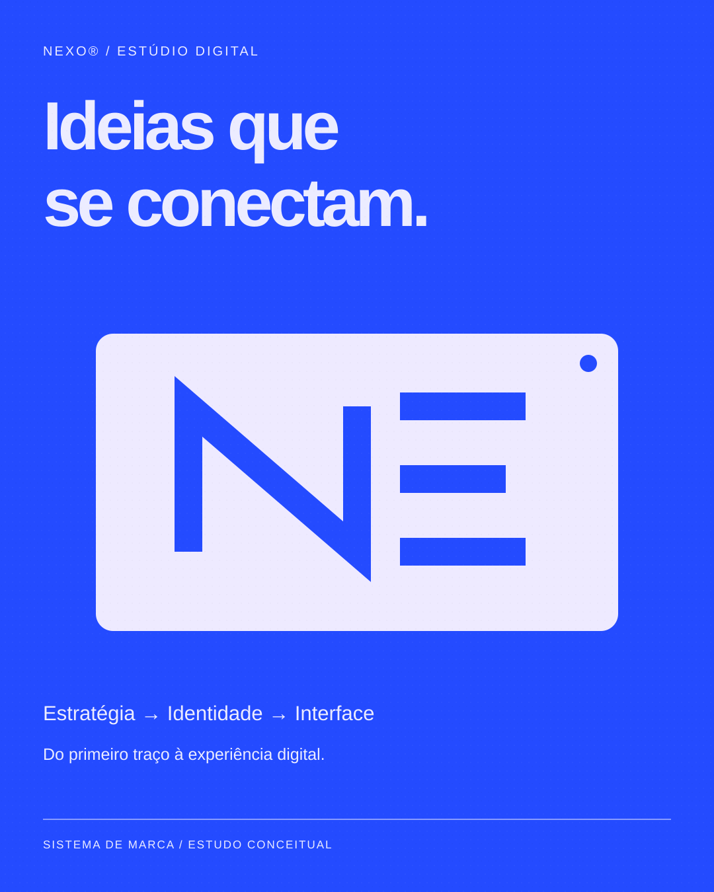
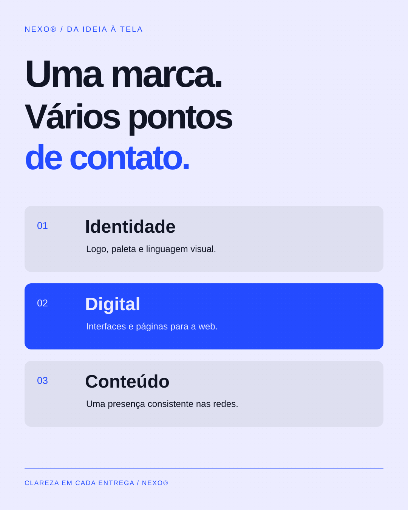

03 / ESTUDO CONCEITUAL
Nexo — Estúdio digital
Uma ideia que conecta as aplicações.
Apresentar a identidade e os serviços de um estúdio digital fictício.
#244BFF#ECECFF#111525
01 / DECISÃO VISUAL
Um símbolo de traços modulares vira o centro visual da campanha, em vez de depender apenas de um slogan.
02 / SISTEMA
Azul elétrico, blocos e números organizam a comunicação em peças consistentes.
03 / ESCOPO
2 peças conceituais, com SVG editável e PNG. Estudo criado com apoio de IA; sem cliente, produção impressa ou resultados comerciais atribuídos.






Marcas, casais, eventos e preços são fictícios. As aplicações de papelaria e embalagem são representações digitais; não foram produzidas fisicamente.